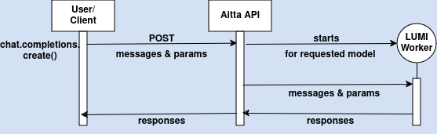
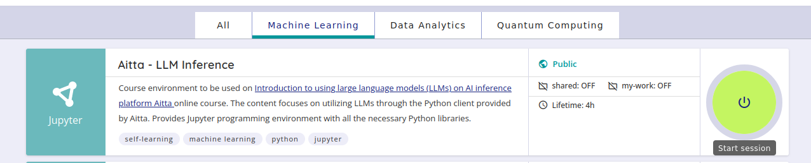
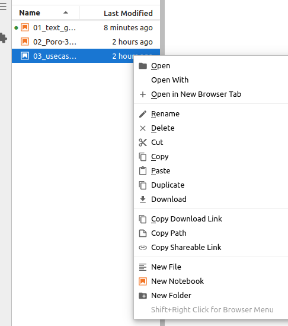

3. Aitta Inference Service#
Aitta is an inference service with a model catalog designed for research and development purposes. Aitta offers you an easy way to utilize powerful LLMs - you send your inference request to an OpenAI-compatible API, and Aitta takes care of allocating resources from the supercomputer’s scheduling system (Slurm), loading the model and forwarding your request to the compute node running it.
There are two ways to use Aitta:
Web frontend at aitta.csc.fi: a basic chat interface for interacting with the models directly.
API at aitta-api.csc.fi: programmatic access, which lets you develop or test applications that need inference as a service component, or run automated evaluations of a model you are interested in.
Aitta currently offers generative large language models (LLMs) and text embedding models. Image input is supported for LLMs with vision capability, and further multimodal capabilities are planned for the future. At the time of writing, the model catalog includes for example the Poro models from LumiOpen, meta-llama/Llama-3.3-70B-Instruct, openai/gpt-oss-120b, allenai/OLMo-7B-0724-Instruct, mistralai/Ministral-3-14B-Reasoning-2512 and the vision-language model Qwen/Qwen3-VL-30B-A3B-Thinking. The catalog changes over time, so check the web frontend for the current list.
Who can use Aitta?
Aitta is available for all users with access to the LUMI supercomputer. You need a valid LUMI account with access to at least one active LUMI project. You can log in with your Haka, MyAccessId/Puhuri or CSC account. After logging in, you select one of your LUMI projects, and your session (or API token) is tied to that project.
What is Aitta meant for?#
Aitta is intended for research and development, for example:
exploring the capabilities of models,
performing research that relies on models to generate or evaluate data, or
developing applications that rely on inference as part of their functionality.
Aitta relies entirely on the LUMI supercomputer hardware and scheduler, so there is no guarantee that a particular model is available at any given time. This means that Aitta is not suited as a production-level inference service, and you should not use it to deploy applications that require assured availability.
Responsibility for model usage: The models available via Aitta are provided “as-is” without any additional safeguards or guarantees for correctness or availability. You are always responsible for your use of the models and must ensure that your use complies with the Terms of Use and applicable law.
See the full Aitta user guide in the LUMI docs for more details.
Understanding the Aitta API#
Aitta offers its models through a REST API, which means that programs can send requests to Aitta over the internet (HTTP) and get the model’s responses back. You don’t need to know how REST APIs work to use Aitta: because the API is OpenAI-compatible, you can use the standard openai Python library and send requests with just a few lines of code.
Key terms:
API (Application Programming Interface): A way for one program to request services or data from another program, without needing to understand its internal workings.
Endpoint: A specific URL of the API for a specific task, e.g.
https://aitta-api.csc.fi/openai/v1/chat/completionsfor chat completions.Access token: A secret key that identifies you to the API. It is sent with every request.
Models are referred to by their id, which follows the format model-vendor/model-name as on Hugging Face, e.g. LumiOpen/Llama-Poro-2-70B-Instruct.
For the full list of endpoints and parameters, see the Aitta API reference and the Aitta user guide.
What does OpenAI compatibility mean?#
OpenAI created an HTTP API for its own models, and over time this API has become a widely used de facto standard for communicating with LLMs. The API defines:
which endpoints exist, e.g.
/chat/completionsfor generating responses and/embeddingsfor creating embeddings,what a request looks like, e.g. a JSON object with the
modelname, a list ofmessages(each with aroleandcontent), and optional parameters such astemperature,max_completion_tokensorstream,what a response looks like, e.g. a list of
choicescontaining the generated message, andusageinformation with token counts.
An OpenAI-compatible API is a service that implements this same interface (the same endpoint paths and the same request and response formats) but runs different models on different infrastructure. You can think of it like a standard power socket: any device with the matching plug works, no matter who produced the electricity.
In practice this means that software written for the OpenAI API, such as the openai Python library, LangChain and many other tools, works with Aitta when you change only two settings:
base_url→https://aitta-api.csc.fi/openai/v1api_key→ your Aitta access token
What OpenAI compatibility does not mean:
Your requests are not sent to OpenAI. They go to Aitta and the models run on the LUMI supercomputer.
You don’t need an OpenAI account or an OpenAI API key.
You are not using OpenAI’s commercial models (such as the models behind ChatGPT). Aitta serves open-weight models. Note that the catalog may include open-weight models published by OpenAI, such as
openai/gpt-oss-120b. These are downloadable models that run on LUMI just like any other model in Aitta.Not every feature of the OpenAI API is supported. Aitta currently implements the chat completion and embedding endpoints. Refer to the OpenAI API specification for the available parameters, but keep in mind that some features may not be supported.
The benefit of this compatibility is that what you learn here transfers directly to other OpenAI-compatible services, and existing code and tools can be pointed to Aitta with minimal changes.
Using chat-based LLMs through the Aitta API#
First, you get an Aitta access token. Then you create an OpenAI client with the token and Aitta’s base URL (https://aitta-api.csc.fi/openai/v1). After that, you can perform chat completions: send prompts and receive responses.
Get an access token. Go to aitta-auth.csc.fi/myToken, or follow the Generate token link on the Aitta homepage (you don’t need to log in to the web frontend first). Log in and select the LUMI project the token should be tied to. The next page shows your token, a button for copying it, and an example
curlcommand for testing it in your terminal.Create an OpenAI client that points to Aitta’s base URL and uses your token.
Send a chat completion request and read the response.
In the upcoming exercises, we will go through this process step by step, helping you become comfortable with the workflow.
The diagram below illustrates the process of making an API call for chat completions for the first time:

Generating the first response might take some time. Starting a new worker in the LUMI Supercomputer takes some time.Exercise time!#
Coding exercises are available through CSC’s Noppe service for interactive web based applications (CSC Docs). An application for this course is set under Machine Learning workspace. Basic knowledge of Python programming and Jupyter notebooks is required for the exercises. For more information on using Jupyter Notebooks, visit Jupyter Documentation. The accepted authentication methods to access Noppe are CSC account, Haka, Virtu, or MOOC.fi credits.
Find the application Aitta - LLM Inference for this course and start a session.

Activated Noppe instance is valid for 4 hours!
Exercise 1: Log into Aitta website#
First you are going to log into Aitta website and follow instructions:
Log into Aitta website https://aitta.csc.fi with your Haka, MyAccessId/Puhuri or CSC account and select your LUMI project.
Which models can you find? Which of them are
Online(already loaded and ready to respond) and which areOffline? Is there a model tha is currentlyLoading?Choose a model and send it a message in the chat view. If the model is offline, click Start model and follow the status messages while the model is being loaded.
Find the User guide link and visit the page.
Find the Generate token link and create an API token. You will need it in the next exercise.
Exercise 2: Chat completions with LumiOpen/Llama-Poro-2-70B-Instruct model#
Try to use Poro chat model 02_Poro-70B-instruct-completions.ipynb
Learn more about message roles and parameters.
Exercise 3: Tokenize text using LumiOpen/Llama-Poro-2-70B-Instruct model’s tokenizer#
See how text is tokenized using LumiOpen/Llama-Poro-2-70B-Instruct model’s tokenizer, and compare it with the tokenizer of the older Poro-34B-chat model, in the 03_poro-tokenizer.ipynb
NOTE!
Your work is not saved in Noppe. You should download preferred files if you want to retain your work after Noppe instance times out.
You can download a single file by going to the File-menu or by right-clicking the file and selecting Download from the dropdown menu.

Be careful not to share your API token anywhere.
Next steps#
Now we have covered first steps of using API for generating text with LLMs. You can move on to next section, Usecases of LLMs.